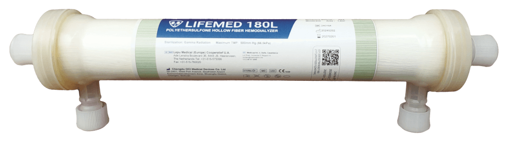
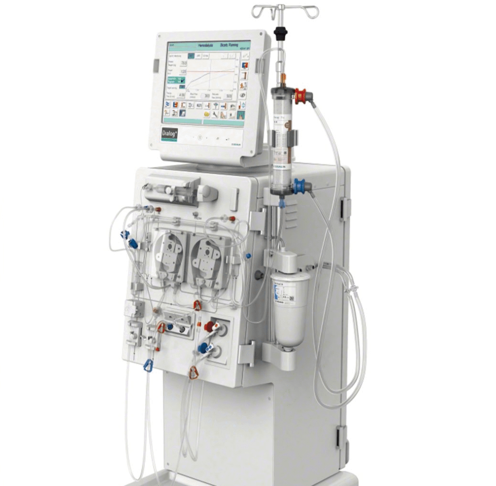
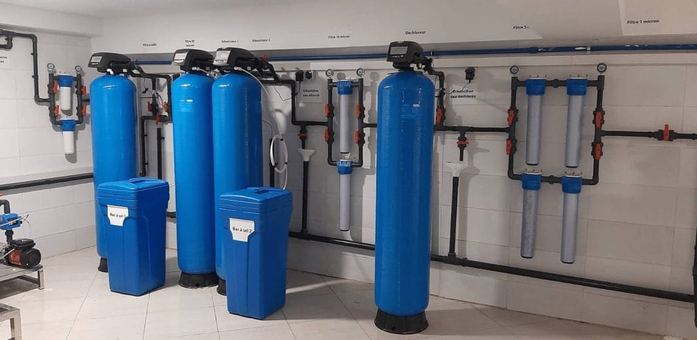

Consommables d’hémodialyse
Modules, lignes et aiguilles de dialyse présentés dans la gamme LifeMed.
Medicoprint présente aux néphrologues, aux jeunes diplômés et aux établissements de santé des consommables, du matériel médical et des solutions de traitement de l’eau dédiés aux environnements de dialyse.

Découvrez les principales catégories présentées par Medicoprint aux néphrologues, aux jeunes diplômés, aux centres de dialyse et aux cliniques. Contactez l’équipe pour confirmer les références disponibles, les spécifications et les informations techniques.

Modules, lignes et aiguilles de dialyse présentés dans la gamme LifeMed.

Systèmes et solutions de traitement de l’eau destinés aux environnements de dialyse.
Équipements pour établissements de santé, centres de dialyse et cliniques.
Courte présentation visuelle des domaines d’activité. Ce diaporama est silencieux ; les références et caractéristiques produit sont à confirmer par Medicoprint.
Voir les produits ↗Medicoprint présente également des services destinés aux professionnels de santé. Les modalités sont à confirmer directement avec l’équipe selon l’équipement et le besoin.
Pour une information professionnelle sur une référence ou une demande de devis, contactez directement Medicoprint. Patients et proches : cette présentation ne remplace pas l’avis de votre néphrologue ou de votre centre de dialyse.